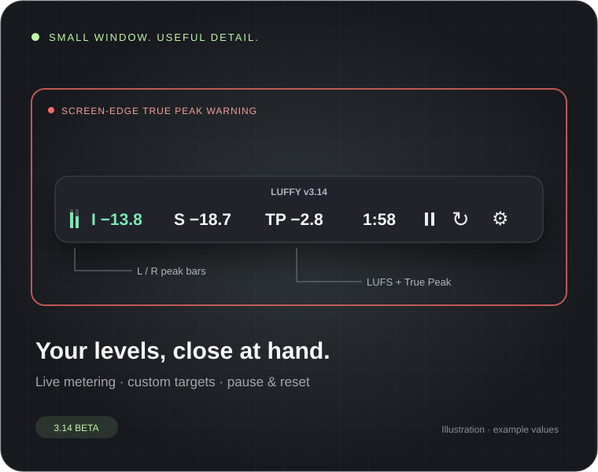
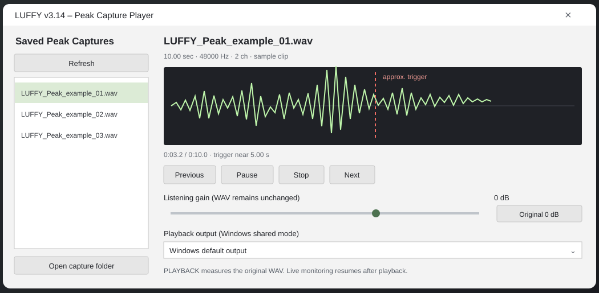

01 ◉
Live loudness
Integrated and Short-term LUFS, True Peak and stereo peak bars. Keep your readings close in a compact, always-on-top window.
 LUFFY.
LUFFY.
Keep an eye on loudness. Catch the peaks. Listen back to what happened. LUFFY 3.14 brings live metering and saved audio together in a small, free Windows app.

WHAT IT DOES
A simple work-in-progress tool for keeping an eye on loudness.
Integrated and Short-term LUFS, True Peak and stereo peak bars. Keep your readings close in a compact, always-on-top window.
Can show a coral warning around your screens when True Peak crosses your chosen limit.
Enable Peak Capture to save WAV clips around above-limit peaks on your selected audio source. Review them when you're ready. Capture is off by default.
NEW IN THE 3.14 BETA
Peak Capture Player puts saved clips, a waveform and listening controls in one place.

Browse saved clips, seek in the waveform and choose a playback output. A marker shows roughly where the peak triggered.
Playback mode measures the saved samples before listening gain. Adjust what you hear without rewriting your recording.
Built-in playback pauses live monitoring. Stop listening and your live session resumes with its Integrated LUFS history preserved.
TRY THE 3.14 BETA
Free for Windows x64. Download the EXE and run it — no separate .NET installation needed. This is a beta; feedback is welcome.
Beta release: automated build checks pass, but the full manual audio and device test checklist is still in progress. Keep your previous build available. Report a problem ↗
TOTALLY OPTIONAL
LUFFY is free to use. If you find it useful and would like to support further development, a small tip is appreciated. Completely optional.
♡ Leave a tipDonation link to be added before publishing.
A FEW THINGS
Yes. LUFFY is free to download and use. Tips are optional.
This beta is for 64-bit Windows. There are no Mac or Linux builds at the moment.
You can choose supported Windows output or input devices. For applications using a dedicated ASIO driver, such as a DAW, you may need an audio interface with loopback routing.
Turn it on in Settings → True Peak to save WAV audio around above-limit peaks from your selected source. It is off by default. Saved clips stay on your computer; the player lets you review them without changing the originals.
While the built-in player is playing, LUFFY measures the original saved WAV and pauses the live session. Stop playback to resume your live readings and history. Live audio during preview is excluded, so avoid reviewing clips during an unattended measurement.
Not yet. The 3.14 beta builds automatically from the source on GitHub. The full manual audio and device checks are still outstanding, so keep your previous version and send feedback if you run into bugs.
Early LUFFY builds may not be digitally signed, so Windows can show a publisher warning. Only download the file from a link you trust, and verify its source before running it.